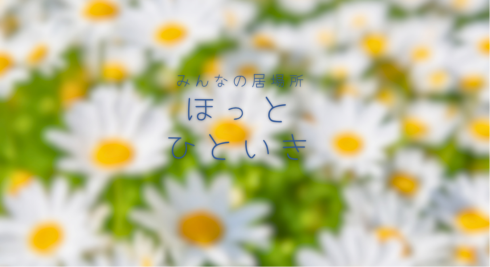
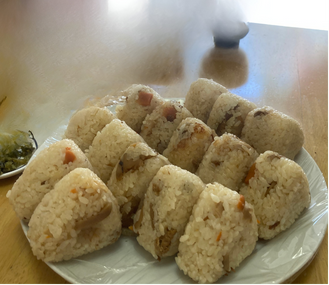
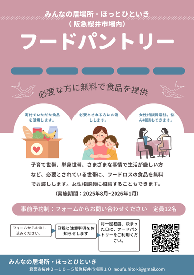
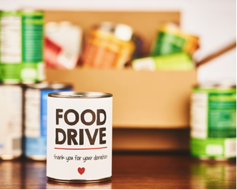
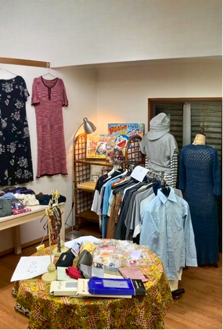
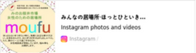

|
|
わたしたちのこと
行政・民間で相談支援経験のある女性たちのグループが、大阪府箕面市のひっ
そりとした商店街のお店で、
「相談もできる居場所づくり」をしています。
ちょっともやもやしていて、誰かに話を聞いてもらいたい時。 悩みや気持ちをとことん話したい時。 役所や病院に行くほどではないけど、困ったことがある時。 気楽に話をしにきてください。 秘密厳守。相談無料。 （メンバー：DV/虐待の相談員、保健師、保育士、行政の女性相談員、現役の NPO相談スタッフなど） |
|
|
女性のための居場所 moufu
お昼におにぎりをみんなで作って食べる「おにぎりの会」や、お茶をいただ
きながら相談員や参加者とおしゃべりをする「お茶の会」を開いています。
。 日にちと時間 平日昼間11:00~16:00 日にちはカレンダーをご覧ください。 参加者：この集まりは女性限定です。男性の方はご遠慮ください。 |
|
 |
|
 |
フードパントリー
「もったいない！」
「食べることは大事」のポリシーのもとに、
フードバンク関西と箕面市社会福祉協議会のご協力を得て
フードパントリーを始めました。
フードロスの食品を、必要とされている方にお渡しします。 ちょっとお話して帰っていただくこともあります。 |
|
 |
|
 |
チャリティショップ ひといき
神戸のチャリティショップ「フリーヘルプ」のご協力により
寄贈していただいたお洋服を販売しています。
一般のご家庭からの不用品もガレージセールとして販売。
売り上げはすべて、パントリーや居場所に使わせていただきます。
ブランドものやおしゃれなお洋服、おもちゃや雑貨。
掘り出し物がいっぱい！
|
|
|
ミニイベント・アロママッサージ講座
アロマのハンドマッサージ講座や
あかちゃんからお孫さん育ての方まで楽しめる
わらべ歌の会など、ちいさなイベントを
毎月実施しています。
参加費は無料（材料費が必要な場合あり） 気楽にお問い合わせください |
|
〒562-0043 大阪府箕面市桜井２−１０−５ 阪急桜井市場 東１０ みんなの居場所・ほっとひといき MAIL:moufu.hitoiki@gmail.com  |
|